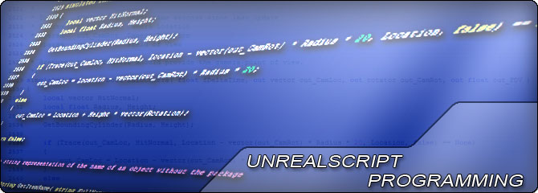

UDN
Search public documentation:
UnrealScriptHome
日本語訳
中国翻译
한국어
Interested in the Unreal Engine?
Visit the Unreal Technology site.
Looking for jobs and company info?
Check out the Epic games site.
Questions about support via UDN?
Contact the UDN Staff
中国翻译
한국어
Interested in the Unreal Engine?
Visit the Unreal Technology site.
Looking for jobs and company info?
Check out the Epic games site.
Questions about support via UDN?
Contact the UDN Staff
UE3 Home > UnrealScript
UnrealScript

UnrealScript is the programming language for Unreal Engine 3. Because it was designed with games in mind, it contains certain built-in features, such as states and timers, that make implementing gameplay much easier. UnrealScript is compiled, but it is not part of the main executable. This makes it a perfect means of implementing and iterating on new gameplay elements without the need to recompile the entire engine when changes are made.
The language is completely built on object-oriented principles and resembles Java or C++ in its syntax. This makes it familiar to experienced game programmers, and extremely easy to pick up. At the same time, because it is used within the context of a game, some of the methodoligies and principles differ from traditional programming. For example, there are no standard explicit constructors or destructors for objects which can be confusing to those used to more traditional programming languages. Once you become familiar with The Unreal Way, however, things will begin to fit into place and adding new elements to games will be a quick and painless process.
-
 Complete reference for the UnrealScript programming language. - Classes - Types - Functions - Operators - Flow - PreProcessor - States - Iterators - Delegates - Interfaces - Replication - Default Properties - Metadata.
Complete reference for the UnrealScript programming language. - Classes - Types - Functions - Operators - Flow - PreProcessor - States - Iterators - Delegates - Interfaces - Replication - Default Properties - Metadata.
- Getting Started: Engine Setup - Acquiring and setting up Unreal Engine 3.
- Getting Started: Programming - Intro to programming in Unreal Engine 3.
- Getting Started: Gameplay Elements - Intro to adding new gameplay elements in Unreal Engine 3.
- Getting Started: Building & Testing - How to compile and test code in Unreal Engine 3.
- UnrealScript Foundations - Important Concepts for developing with UnrealScript.
- Custom UnrealScript Projects - Setting up new UnrealScript projects.
- Basic Game Quick Start - Creating an empty game framework to start from.
- UnrealFrontend - Guide to using the UnrealFrontend multi-purpose tool.
- UnCodeX - Tool for creating API docs from UnrealScript source files.
- Coding Standard - Overview of the coding standards used by Epic Games.
- UnrealScript Reference - Complete reference for the UnrealScript programming language.
- Strings In UnrealScript - Overview of working with strings in UnrealScript.
- UnrealScript Preprocessor - Syntax and functionality of preprocessor directives in UnrealScript.
- UnrealScript Structs - Overview of performance implications of using structs in UnrealScript.
- UnrealScript Delegates - Overview of using function delegates in UnrealScript.
- UnrealScript Interfaces - Description of interfaces in UnrealScript and how to use them.
- UnrealScript Cheat Sheet - Important rules and syntax to remember.
- Actor Ticking - Explanation of how and when Actors are ticked.
- Actor Components - Creating and using ActorComponents.
- Archtypes - Overview of archetypes, what they are and how you can use them.
- Archetypes Technical Guide - Information about the technical aspects of archetypes.
- UnrealScript Game Flow - Description of the lifecycle of a game in UnrealScript.
- Exec Functions - Overview of Exec functions and how to use them.
- DLLBind - Description of the DLLBind system for calling functions in DLLs from UnrealScript.
- Localization Reference - Guide to using the localization system in UE3.
- Localized Text Files - How to localize text using localization files.
- Scripted Textures - Guide to creating and using ScriptedTextures.
- Debugger Interface - Reference of the interface for creating an UnrealScript debugger.
- AI & Navigation - Using navigation systems to control AI.
- Gameplay - Adding new gameplay elements.
- Input / Output - Methods of inputting and outputting data with Unreal Engine 3.
- Networking & Replication - Overview of the networking system and replication in UE3.
- User Interface & HUD - Creating user interfaces such as menus and HUDs.